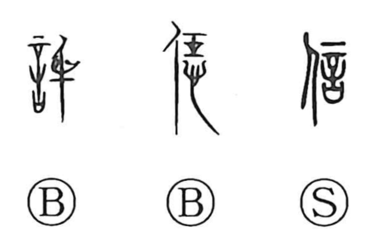

Explanation
信 combines 人, a person, with 言, an oath addressed to the gods. 言 places a large tattooing needle above the vessel containing the written prayer. The instrument of punishment gives the pledge its solemn force: these are words for which the speaker is answerable.
A promise made between people under that divine sanction is 信. To be sincere is to make the pledged words true through one's conduct. From the dependable promise come truthfulness, trust, and being worthy of belief.
A reliable sign can then serve as proof or as a tally authenticating an agreement. Through interchange with related words, 信 also acquires uses for entrusting something and for a message or messenger. The central relation remains the bond between what a person says and what can be relied upon.